1922—Tailored Pockets
Woman's Institute of Domestic Arts & Sciences, by Mary Brooks Picken
The Making of Tailored Pockets
STAND POCKET
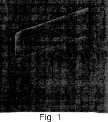4. The first of the tailored pockets to be considered is the stand pocket, an example of which is shown in Fig. 1. This type of pocket really consists of two parts—the stand, or part that serves as a finish for the opening, and is the only part visible, and the pocket proper, or pouch, which is inside the garment, that is, between the outside material and the lining. The stand pocket is very effective on garments of firm material that have wide stitching, as it imparts to them the smart look so much sought by wearers of tailored garments.
As a rule, the stand pocket is used simply as a breast pocket, but sometimes it is placed below the waist line at the sides of garments; also, it is used in skirts and in belts. The pocket here shown is for the left breast, and its lines are diagonal. Of course, as such pockets may be placed in other positions and, as is explained later, the lines may assume various shapes, it is well in making them to be careful to have the lines run in the proper directions so that they will harmonize with the other lines of a garment.
So that a good knowledge of the way in which to make a stand pocket may be gained, the construction of the pocket illustrated in Fig. 1 is here taken up in detail. To get the best results, the actual work should be done, but not before each step has been carefully studied and is clearly understood.
5. Size and Position of Pocket.—When the stand pocket is used as a breast pocket, the stand is generally made 3 ½ to 4 in. wide and about 1 in. deep, and the pocket proper, or part that forms the pouch, about 3 ½ to 4 in. wide and of the same depth. As said before, however, the sizes of pockets vary and may be made to meet requirements. The position of the pocket is usually marked in the first fitting of the garment in which it is to be used, especially if it is to serve as the breast pocket in a coat. However, no definite rules or directions for marking the position of stand pockets in coats are given until tailored coats are discussed.
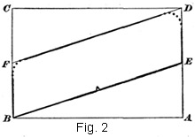6. Preparing the Stand Pattern.—The first step in connection with the making of a stand pocket is to draft a pattern for the stand. No pattern is required for the other part of the pocket. To draft such a pattern for the pocket shown in Fig. 1, proceed as follows, referring to Fig. 2 as a guide:
On a piece of paper of suitable size, using a ruler or a square, draw first a parallelogram each side of which is 3 ½ in. and each end of which is 2 1/4 in., lettering the corners A, B, C, and D, as shown. Next, locate point E 1 1/8 in. below D on line A D, and point F 1 1/8 in. above B on line B C. Then connect B and E, as well as F and D, with a diagonal line, as shown. If desired, the upper corners may be rounded off a trifle, as indicated by the dotted lines. With the drafting thus completed, form the pattern by cutting from B to E, from E to D, from D to F, and from F to B; if rounded corners are wanted, cut on the dotted lines. At this time, also, so that there will be no danger of mistaking the top of the pattern for the bottom when using it to cut out materials for the stand of the pocket, cut a small notch in the pattern on the bottom line, as indicated in the illustration.
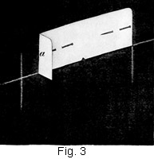7. Marking the Garment Material for Matching.—Having prepared the pattern as directed, proceed next to locate the position of the stand on the garment material, so as to assist in matching the material of the stand and the garment. Good judgment must be exercised in doing this work, because it is imperative that the weave and the design of both materials match perfectly at the place where the pocket is to appear. It is necessary, also, to take into consideration the side of the garment on which the pocket is to come, as well as the direction in which it is to slant, so that the stand pattern may be placed correctly. In this case, as the pocket is for the left side of the coat, pin the pattern on as shown in Fig. 3; that is, so that its ends are parallel with the vertical stripes of the cloth and the highest part of the pattern when in this position will come at the left when the garment is on the wearer. In placing the pattern, it is well to bear in mind that best results will be obtained by having its ends come between the stripes instead of directly on them; and, in order to make certain that the pattern edges are parallel with the stripes, crease the pattern at the exact edge of one of the prominent stripes, as shown at a. This crease in the pattern is valuable later in cutting out the stand material, because by placing it on the same stripe as in the garment material accuracy will be assured. With the pattern correctly placed, outline its sides and its lower edge on the garment material with tailor's white chalk, as shown; tailor's colored chalk should always be avoided in such work, as it is next to impossible to remove it from some materials. Then remove the pattern and proceed to mark and cut out the material for the stand.
8. It may be well to mention at this time that when striped material is used for a garment and there is a seam down its front, as in the semi-fitted coat, great difficulty is often encountered in matching all the stripes. In a case of this land, therefore, the best plan is to match only the stripes in the front section, rather than those in the side section. Otherwise, the procedure is the same as that just mentioned.
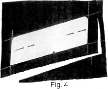9. Cutting Out the Stand.—After determining just where the stand is to come, the cutting out of the stand material so that it will match that of the garment is simple. To do this work properly, proceed as shown in Fig. 4. Place the stand pattern on a piece of the material in exactly the same way as directed for marking the position of the stand on the garment. Make sure to have the pattern slant the same and to have the ends come on the same stripes of the cloth; also, turn back the pattern on the creased line to see that the crease comes along the edge of the same stripe as in the garment material. Then pin the pattern securely in place and cut out the stand, allowing ½ in. all around the pattern for the finish and turnover. There is no necessity for mark-stitching in this case, but before removing the pattern from the material thus cut out, run a basting thread all around the pattern or mark the material with tailor's chalk, so that the true outline of the stand will be known in making the pocket; also, notch the bottom line, as shown, so that there will be no danger of mistaking the top of the material for the bottom and thus spoil the matching of the design or the weave of the materials.
10. Cutting Out 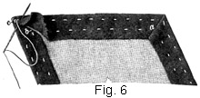the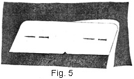 Canvas Interlining.—In order to prevent the stand of the pocket from sagging when it is on the garment, an interlining of canvas is generally inserted between the stand material and its lining. To cut out this interlining, proceed as shown in Fig. 5, using a piece of lengthwise canvas that has been shrunk. After pinning the pattern in place, as shown, cut the canvas exactly the same size as the pattern at the sides and the top, but at the bottom allow ½ in. for a seam and cut a notch in it, as shown in Fig. 6.
11. Putting the Stand Together.—With the material and the interlining for the stand cut out, proceed next to put them together. Thus, pin the canvas to the wrong side of the material and baste them together, basting from the right side of the material. With the right side of the material still up, turn all edges except the lower edge over on the canvas, being sure to follow the marked pattern lines carefully, and then baste them as shown in Fig. 6, always basting from the right side in such cases. These edges must be turned absolutely true, so that the lines of the finished pocket will be as perfect as possible. Next, miter the corners as at a, first trimming the corners as at b and then whipping them as at c. If the corners are rounded, take care to bring them down well when whipping the material edges, so that a graceful, curved line will be obtained. With this done, press the stand from the wrong side, and then proceed to stitch it. The stitching should be the same in width as the outside stitching on the seams of the garment, which usually varies from 3/8 to 5/8 in. from the edge. If the corners of the stand are round or if sufficient practice has not been had in turning accurate corners, it is advisable to outline the position of the machine stitching with basting threads. If the stitching is not outlined in this way, then the gauge of the sewing machine must be made use of, because the stitching on the stand portion must be accurate. When the stitching is done, remove all basting except that which marks the depth of the stand, and then press the stand again, this time, however, from the right side and with a damp cloth laid over the material. The stand is now ready for the lining.
12. Pocket Linings.—Before taking up the lining of the stand, it may be well to consider the material to be used in lining pockets. For the stand or the flap of a pocket, a very good quality of satin or silk is most suitable, and for the pouch part, especially if a durable pocket is desired, sateen of close weave is very satisfactory. Because of the fact that a pocket flap or a pocket stand comes on the outside of a garment, the lining material for it should harmonize in color.
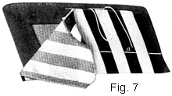13. Lining the Stand.—To line the stand, it is necessary to use a piece of lining of exactly the same size as the stand material, for when the seam edges of the lining are turned down they will be well inside the stand portion and will not show on the right side. Therefore, lay the stand pattern on a piece of the lining material, taking care to have the weave of the lining run the same as that of the stand material, and cut it out. Then place the wrong side of the lining to the wrong side of the stand and proceed to whip the lining to the stand, as shown in Fig. 7, using small stitches. Next, press the stand again, when it is ready to be applied to the garment. At this time, also, to serve as a guide in stitching the stand to the garment, run a basting thread from the right side, as shown at a, through the lining in the mark-stitching.
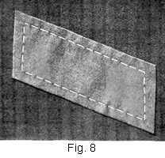14. Placing the Reinforcing Strip.—To strengthen the finished pocket, it is necessary to place underneath the pocket opening a strip of lining, usually silesia or cambric, that is 3 in. in depth and 1 ½ in. wider than the pocket itself. This strip must be cut so that its lengthwise threads will run parallel with the lower edge of the stand, for it must neither give nor pull out of shape. In placing this reinforcing strip, which is the next operation in making the stand pocket, put it on the wrong side of the material, allowing two-thirds of it to extend above the mark for the pocket opening. Then turn over the material with the strip pinned to it and baste the strip on, as shown in Fig. 8, basting from the right side of the garment material in order to have it perfectly smooth.
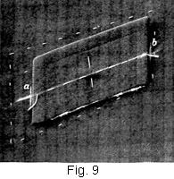15. Placing and Basting the Stand in Position.—When the reinforcing strip is in position, it is next in order to place the stand in its proper place and baste it. Therefore, to be absolutely, sure that the stripes of the stand and the garment materials match exactly, pin the stand on as illustrated in Fig. 9; that is, so that the basting in the stand is directly over the diagonal chalk mark on the garment and its ends come at the vertical chalk marks. If it differs even a trifle when placed according to the original marks, remove the stand and again mark along each end of the stand, as at a and b, for, as has been said before, the matching must be accurate. Having matched the material correctly, remove the pin, turn the stand so that its top will be downwards, and then place it so that its right side will be to the right side of the garment, its basting directly over the diagonal chalk mark, and its ends on points a and b. Then, after pinning it in this position, baste it in place, basting through all thicknesses and lifting the ends of the stand so as to make certain that it is straight and that the stripes match exactly.
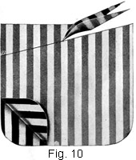16. Preparing the Material for the Pouch.—With the stand basted to the garment, proceed to prepare the lining material that is to form the pocket portion, or pouch. First, cut out two pieces of lining, making each about 5 in. square, and then pin them so that their right sides are together, as in Fig. 10. Next, to give the top of the pocket portion exactly the same slant as the stand and thus permit it to hang straight across the bottom, as it should, draw a diagonal line from a point 1 1/8 in. below the upper left-hand corner of the lining material, as at a, on the lengthwise edge, to the upper right-hand corner and cut along this line. At this time, also, round off the lower corners, as shown.
17. Joining the Stand and the Pouch. The stand and the pouch may now be joined. Therefore, unpin the two pouch pieces and baste them in place, as shown in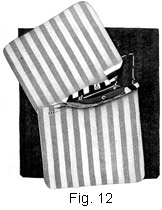 Fig. 11.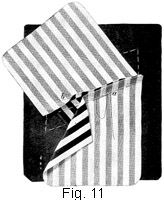 Baste one piece over the pocket stand so that the stitches will come exactly in line with the basting on the stand, as at a, and the other piece as at b, leaving a space of just ½ in. between the basting of this piece and the basting of the first piece. Care must be taken to keep a true basting line in each case and to extend it exactly to the ends of the stand portion and no farther. As will be observed, the seam edges of the pouch material overlap a trifle; this, however, is as it should be, because an ample seam allowance is required to prevent the pocket from pulling out when in use.
With the basting done, stitch the pouch pieces in the manner shown in Fig. 12. First, stitch the piece over the stand, stitching through the basting that holds the stand to the garment and just to the ends of the stand, or termination of the basting, as at a. Then stitch the other pouch piece along the basting, beginning 1/4 in. from one end of the basting and ending 1/4 in. from the other end. The stitching must be shorter on this side than on the other, so that it will not show when the stand is turned in its proper position. Then, too, sufficient space must be left between the stitchings to permit the ends of the pocket to be finished and thus made secure. When the stitching is completed, bring the ends of the thread through to the wrong side and fasten them securely; then remove all bastings that have been replaced with stitching and prepare to cut the pocket opening.
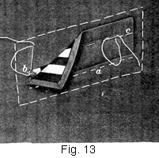18. Cutting the Pocket Opening and Completing the Pocket.—So that the opening for the pocket may be cut, turn the seam allowance back, as shown at b and c, Fig. 12. Then, with a pair of very sharp-pointed scissors, proceed to cut the opening, inserting the point of the scissors at the center, as at d, and cutting out, from the center to within 1/4 in. of each end of the stand stitching, as indicated at e. Then cut precisely to each corner in a diagonal line, exercising the greatest care, for in nowise should the clipping extend so far as to weaken the ends of the pocket. By cutting the corners in this manner, there remains at each end a triangular piece that must be secured to the lining later. With the opening thus made, turn the pocket pieces to the wrong side by slipping them through the opening, when the outside of the pocket will appear as shown in Fig. 13. Next, baste the lower edge of the stand as at a, slipping two fingers of the left hand underneath the stand and in the opening, so that the underneath portion of the pocket will not be caught. Next, secure the triangular piece at each end of the opening to the lining, as at b. Then, so as to make sure that the pocket will set perfectly, and, if of striped material, that the stripes will match exactly, baste the upper edge of the stand to the garment, as at c.
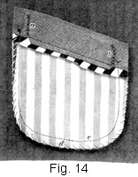19. With the stand thus basted and the triangular portions secured, turn the garment over so that the wrong side of the pocket is up, as in Fig. 14, and fasten the ends of the stand from the wrong side with buttonhole twist, as at a and b. In doing this, begin at the bottom of the stand and take short, diagonal stitches to the top of the pocket; then, reversing the direction of the stitch, work down to the starting point, crossing the stitches that are put in from the bottom and the top of the stand, as shown. Next, baste the pouch portions together and stitch them, as at c. If the lining is likely to fray, finish the edge of the pocket with over casting-stitches, as at d. Finally, remove all basting, lay a press cloth over the right side of the pocket, and press the pocket thoroughly. When thus completed, the stand pocket will appear on the right side as in Fig. 1 and on the wrong side as in Fig. 14.
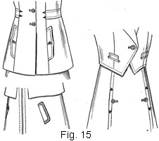 20. Stand-Pocket Variations.—As has been mentioned, each type of pocket is subject to many modifications in shape. To form a definite idea of some of the variations of the stand pocket, reference should be made to Fig. 15. These pockets differ only so far as shape is concerned, and no difficulty will be encountered in making them or other styles, or even in creating different shapes, provided the construction and finishing of the stand pocket just discussed is thoroughly understood.
FLAP POCKET
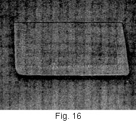21. The next type of tailored pocket to be considered is the flap pocket, one style of which is illustrated in Fig. 16. This pocket also consists of two parts—the flap, which serves both as a finish for the pocket opening and as protection for the pocket itself, and the pouch, which is similar to that of the stand pocket. The flap pocket is a very desirable one, as it is adaptable to nearly all tailored fabrics and its size, shape, and position can be varied to give pleasing effects on many kinds of garments.
The materials required for the flap pocket—that is, for the lining and the reinforcement—are practically the same as those for the stand pocket, and, in fact, the making of this type of pocket differs very little from the making of the other type, it being necessary also to match the material very accurately. As will be observed, the flap of this type of pocket resembles the stand of the other, although, of course, it is placed in the reverse position.
22. Flap pockets are generally placed at the sides of garments, and as a rule two pockets are made at the same time, one for each side. In such a case, therefore, so that the pockets will be exactly the same in size and shape when finished, mark-stitching must be used to mark the pattern lines of the flap, as well as the position of the pocket on the garment. The position and the width of the flap pocket should be decided in the first fitting. The exact place where the pocket is to come should be determined when the garment is on, the location usually being governed by Dame Fashion, who calls for different positions, sizes, and shapes each season. The procedure when these points are decided is to mark with tailor's chalk the exact position and approximate size, remove the garment, pin it together carefully so that the seams or pattern edges on each side will correspond exactly, draw a chalk line where the pocket is to come, and then mark-stitch on this chalk line through both thicknesses of the garment, so that the pocket will come exactly in the same position on each side.
The construction of the flap pocket shown in Fig. 16 will present no difficulty once the making of the stand pocket is thoroughly understood; nevertheless, as before, it is advisable to make up a flap pocket as here explained, for by doing the actual work apparently difficult points will become simple.
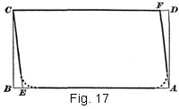23. Preparing the Flap Pattern.—The only pattern required for the flap pocket is that for the flap. To get the dimensions required for drafting the pattern in the actual making of flap pockets in garments, it is necessary to measure the chalked outline To draft such a pattern for the pocket here considered, which is of average size, proceed as shown in Fig. 17, using a piece of paper of suitable size. First, draw a parallelogram each of whose sides is 4 ½ in. and each of whose ends is 2 1/4 in., lettering the corners A, B, C, and D, as shown. Next, locate point E 1/4 in. to the right of B on line A B and point F 1/4 in. to the left of D on line C D. Then connect points A and F, as well as C and E, with a diagonal line. If slightly rounded corners are desired at the lower edge of the flap, the draft may be so marked, as indicated by the dotted lines. With the drafting thus completed, form the pattern by cutting from A to F, from F to C, from C to E, and from E to A. For round corners, cut on the dotted lines.
24. Cutting Out the Flap.—With the pattern thus prepared, proceed to cut out the material required for the flaps. Pin the flap pattern on a double thickness of the garment material, placing it so that the stripe, or at least the weave, of the flap material will match that along the pocket mark of the garment material; in other words, match the material in the manner explained for the stand pocket. If the material is dark, outline the pattern edges with tailor's white chalk; then cut all the way around the pattern, allowing 3/8 in. for seams, and, after removing the pattern, mark-stitch all the chalk lines. If the material is of the kind on which tailor's white chalk will not show, cut the material in the manner directed, but mark-stitch around the pattern before removing it. With the material cut out, cut the pieces of lining required for the flaps, making them the same in size as the pieces of material for the flaps.
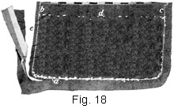25. Making the Flap.—Next, proceed with the making of each flap. To do this work correctly, place the right side of the lining to the right side of the material and baste them together from the cloth side, beginning at the top of one end and continuing around to the top of the other, but not across the top. In basting, hold the flap material a trifle full in order that the lining will be a little smaller; then, when the flap is stitched, the lining will not show along the edges. With the basting done, stitch just outside of the mark-stitching where it is basted, as shown at a, Fig. 18, continuing to the edge, as at b and c. Do not stitch the upper edge of the flap, as it must be left open to permit the flap to be turned right side out. Next, remove all basting and mark-stitching threads except the mark-stitching at d, which marks the top of the flap, and trim the seam edges in the manner shown at e, trimming, in firm material, to within 1/8 in. of the stitching. With this done, turn the flap right side out and baste it a scant 1/4 in. from the edge, taking care that the seam is rolled out to the edge. Then baste another row about ½ in. from the first row, using a short basting-stitch to hold the edge firm. When the basting is completed, press the flap thoroughly, and, after adjusting the gauge of the sewing machine, stitch the bottoms and ends of the flaps the same distance from the edge as the seams of the garment are stitched, usually 3/8 to 5/8 in. If no stitching appears as a seam trimming on the right side of a garment, then the flaps should be carefully pressed and applied without stitching on the outer edge. Next, remove all the basting at the edge, and then run a basting through the lining along the upper edge at the mark-stitching. This marking is done so that it will show on the lining side, and also so that the mark-stitching can be taken out at this time in order to avoid catching it when stitching the flap in position with the sewing machine.
26. Applying the Flap and Finishing the Pocket.—Having made the flaps in the manner directed, it is next in order to secure them to the garment, to make the opening, and to apply the pouch part of the pocket. As in making the stand pocket, it is first advisable to place a reinforcing, or stay, strip in position. Therefore, pin to the wrong side of the garment material a lengthwise stay strip of cambric or silesia that is 2 in. deep and 1 ½ in. longer than the width of the pocket, placing it so that its lengthwise center is directly under the chalk marks on the material, and then baste it in position.
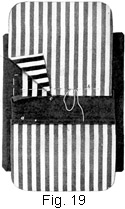27. Next, baste the flap to the material in the manner shown in Fig. 19; that is, with its right side to the right side of the material and its basting line directly on the chalk mark on the garment material. Then, as in making the stand pocket, cut out the lining material for the two pieces that form the pouch. Cut each of these pieces 1 ½ in. wider than the flap or the pocket opening, but make the depth of only one equal to the desired depth of the pocket; for the other, make the depth 2 in. less than the pocket depth, but to this piece, as shown at a, stitch a lengthwise strip of the garment material that is 2 in. in depth and of a width equal to the width of the piece. Then proceed to baste these two pieces for the pouch in place. Baste the full-sized piece over the flap, as shown at b; that is, with its right side down and so that the basting will come along in the basting with which the flap was basted on. Baste on the piece with the garment material attached, or the lower part of the pocket, as at c, also with its right side down. This strip of garment material on the pouch part must be used, because, otherwise, the lining will show from the right side of the garment when the flap of the finished pocket is lifted.
28. With the pouch pieces thus basted in place, stitch both the flap and the lower part to the garment material, leaving a space of ½ in. between these stitchings. Having finished this stitching, remove all the basting and fasten the thread ends on the wrong side. Then, holding the seam edges apart, cut the pocket opening, following the directions given in connection with the stand pocket; that is, cutting to within ½ in. of each end and then diagonally to the end of the flap, as well as to the end of the stitching of the lower part of the pocket.
29. After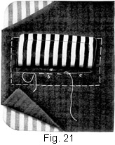 thus 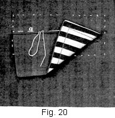cutting the opening for the pocket, slip the lower portion through the opening, turn the flap down from the right side of the garment, and baste in the manner shown at a, Fig. 20. Next, as in Fig. 21, bring the lower portion up, allowing the material to extend up far enough to fill the space between the stitching of the flap and that of the bottom, as shown at a, thus forming a welt, which aids in concealing the lining when the flap is lifted. Then turn the seam down and baste, as shown at b, slipping the fingers inside the pocket opening, so as to prevent the stitches from catching the material underneath. Next, stitch along the lower edge, as at c, and bring the other pocket portion down into position, as in Fig. 22.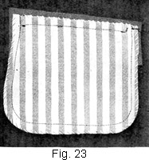 With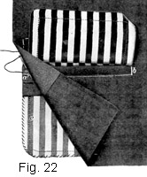 this done, carefully turn under the triangular pieces to the wrong side and fasten them through both thicknesses, as shown at a; also, to strengthen the pocket, finish the ends of the pocket opening with the overcasted bar-stitch, as at b. Next, baste and stitch the pouch portions together, as at c, and then overcast the edges, as shown. With all the stitching done, remove all the bastings and press the pocket thoroughly from the right side. When thus completed, the flap pocket should appear on the right side as in Fig. 16 and on the wrong side as in Fig. 23.
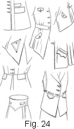 30. Flap-Pocket Variations.—Several variations of the flap pocket are illustrated in Fig. 24. These pockets will serve to make clear the way in which flap pockets of different shapes may be applied, and should serve as suggestions for others along the same line. As will be observed, the flaps may be circular, triangular, rectangular, and so on, and may have square or round corners; also, buttons and buttonholes and other trimming may be added to create the right effect. In every case, however, the shape of the flap, the stitching and the trimming is in harmony with the garment on which it is used, a point that should always be borne in mind in connection with garment making.
WELT, OR SLIT, POCKET
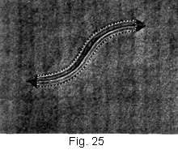31. The third type of pocket, namely, the welt, or slit, pocket, is illustrated in Fig. 25. This type of pocket has neither a stand nor a flap, simply a slit, or opening, secured with welt edges, and a pouch. Although the opening of the pocket shown here is in the form of a reversed curve, or "line of beauty," as it is sometimes called, openings in the form of other curves, as well as straight and diagonal lines, may be used effectively, as is pointed out later.
The welt, or slit, pocket is used as a breast pocket; at the sides of a garment, below the waist line, as a pocket for a handkerchief, car fare, or any small article; and sometimes simply to create an ornamental effect on a garment. If it is to be used as a breast pocket, as in this case, the opening should never be more than 3 1/8 or 3 5/8 in. wide, but if it is to be used in the lower part of a coat or a skirt it may be from 1 to 1 ½ in. wider.
No difficulty should be met in constructing the welt, or slit, pocket; indeed, with a good idea of how the stand and the flap pocket are made, the making of this pocket should be comparatively easy.
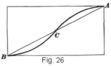32. Preparing the Pattern for the Curved Opening.—The curved opening for the pocket shown in Fig. 25 may be drawn freehand, with the aid of any circular article, such as a drinking glass, or with the tailor's square. In any event, it is very necessary to get the correct slant to the reversed curve, so that when it is transferred to the material in which the pocket is to be made it will assume a good line and appear well balanced. For the pocket here shown, the opening of the original of which is practically 3 ½ in. wide, it will perhaps be best to draft a pattern in the manner shown in Fig. 26. Therefore, on a piece of paper of suitable size, draw first a parallelogram whose top and bottom lines are each 3 in. and each side, or end, of which is 1 ½ in., and then, as shown, letter the upper right-hand corner A and the lower left-hand corner B. Then connect A and B with a diagonal line and mark the center of this line C. With this done, proceed to draw the curve with the aid of the square. Thus, place the square, U. S. up, so that yy of the L. A. C. is at B and the edge of the curve, near ww, is at C, and draw the curved line to connect B and C; then, reverse the square, place yy at A and the edge of the curve, near ww, at C, and draw the other half of the reversed curve. With the curve thus outlined, cut it from A, through C, to B; then cut from A along the upper line of the rectangle, and from the upper left-hand corner to B. The pattern, which consists of the part above the curve, will then be ready for outlining the opening on the material.
33. As has been stated, the curved edge of any circular article may be used in drawing the curved line, or it may be drawn freehand. In either case, however, it is advisable to draw a parallelogram first and then, so as to be sure of the proper slant for the curve, to connect two of its corners with a diagonal line, the direction, or slant, of which will depend on which side of the garment the pocket is to appear. Of course, pockets of different size and curves of different curvature will require parallelograms of different sizes, and just what the size ought to be must be determined by experiment. A good plan, however, is to decide on what the width and the slant of the pocket openings are to be and then, by actual measurement, determine what the length of the top, bottom, and side lines of the parallelogram must be to accommodate the opening. The value of such a pattern lies in the fact that it assures accuracy, for its side or its top may be placed on a stripe or the grain of the garment material; whereas, if no such plan were followed, there would be danger of having the curved opening appear crooked on the garment and thus detract from its appearance.
34. Preparing the Material for the Pocket.—With the pattern made ready, lay it on the garment at the place where the pocket opening is to appear, being careful to have it straight, and then outline the opening by drawing a chalk line along the curved edge of the pattern. Next, on the wrong side of the material, baste a lengthwise piece of silesia or cambric that is 2 ½ in. deep and 5 in. wide directly under the mark made on the right side for the pocket opening, as shown in Fig. 27.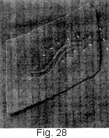 Then, 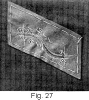from the right side of the cloth, run a basting thread along the mark and through the basted reinforcing strip, as at a, so as to outline the pocket opening on the wrong side, using very short stitches and following the curve exactly.
35. Next, as shown in Fig. 28, pin to the garment material, over the marked pocket opening, a piece of material that is about 2 ½ in. by 5 in., placing it right side down and taking care to match the stripes of the material if there are any. If there are no stripes in the material used, at least the weave of the materials must be matched; that is, the lengthwise threads of each must run in exactly the same direction. When this piece is properly matched and pinned in position, secure it in place from the wrong side by basting ½ in. from the marked threads, as shown at b and c, Fig. 27. Then, with the sewing machine, stitch it and the reinforcing strip in place, stitching from the wrong side and within 1/8 in. of each side of the marked thread, as well as across each end, as at d. Extreme care must be exercised in doing this stitching, for to have the pocket opening correct, the lines must conform to its outline and the space between each row of stitching must be exactly the same the full length of the curve. With this work done, remove the basting between the rows of stitching, as well as the diagonal basting just outside of the stitching.
36. Cutting the Pocket Opening.—The next step is to cut the opening for the pocket. Therefore, with a pair of sharp-pointed scissors, cut from the center to within 1/4 in. of each end of the curved opening and then in a diagonal line to each corner, as at eand f, Fig. 27, and also as in Fig. 28. In cutting this opening, it is well to keep in mind the importance of exercising care when the seam allowance is so narrow, as well as the necessity of keeping the cutting line an even distance from the stitching. If the material is heavy or does not fray, the edges of the slit may be trimmed a trifle to avoid too many thicknesses; on the other hand, if the material frays easily, these edges should be overcast with close stitches.
37. Finishing the Pocket.—With the pocket opening cut, slip the material through the slit in the manner indicated in Fig. 29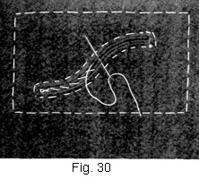 and 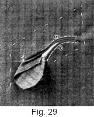then proceed to baste it, as at a and b. In doing this basting, hold the seam back from underneath with the forefinger of the left hand and at the top hold it with the thumb, so that it cannot be caught in with the welt edges. Have the welts fill the entire space between the stitching and of the same width on each side of the opening. Before starting the basting, it is well to test the width that the welt will have to be to accomplish this, and then begin to baste close to the edge, as shown. After this basting is done, baste the welts together with diagonal basting, as shown in Fig. 30, so as to make sure that their edges are true, and then, placing a press cloth over the right side of the material, press the pocket thoroughly. With the pressing done, stitch the lower edge of the pocket 1/16 in. from the edge, as shown at a, Fig. 31, and fasten the thread ends securely on the wrong side.
38. With 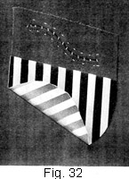the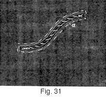 pocket opening thus prepared, proceed next to apply the pouch. For the pouch portion, cut two pieces of silk lining, making each 4 ½ in. wide and 3 ½ in. long and shaping them as shown in Fig. 32. To one piece of lining, stitch a strip of the garment material that is 2 ½ in. wide on the lengthwise and 4 ½ in. on the crosswise, placing the right side of the strip to the right side of the pouch material, as shown at a, Fig. 33. Then stitch the other pouch piece to the lower edge of the pocket, as shown in Fig. 32. With this done, place the piece of pouch material to which the strip of material is sewed directly over the pocket, having the right side next to the pocket and the edges even. Then baste and stitch the upper edge of the pocket opening the same width as directed for the lower edge, stitching through all thicknesses and fastening the ends of the stitching threads on the wrong side.
Next, baste and stitch 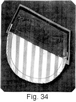the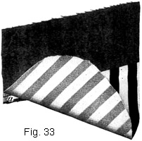 pouch portions together, and, if necessary, trim and overcast the edges. In stitching the pouch portions together, care should be taken to catch the reinforcing strip, as in Fig. 34, so that it will be held to the pocket itself. Next, finish each end of the opening either with an arrowhead or with the overcasted bar-stitch. Arrowheads, as shown in Fig. 25, are preferable for such pockets, as they not only give an attractive finish, but add strength to the pocket as well. The making of arrowheads is considered in Tailored Buttonholes and Buttons.
Finally, remove all basting, except the center diagonal basting, which must be left until the garment is finished, and press the pocket thoroughly. When completed, the pocket should appear on the right side as in Fig. 25 and on the wrong side as in Fig. 34.
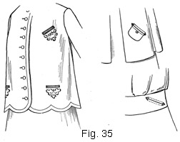 39. Slit-Pocket Variations.—A few variations of the slit pocket are illustrated in Fig. 35. As will be observed, the slit may be made to assume various shapes and the pocket itself be placed in different positions; but, of course, as has been stated, the construction of the pocket is always the same. Many decidedly pleasing effects can be secured by using just the correct shape of slit and position to harmonize with the garment on which the pocket is to be used. In placing pockets on a garment, as well as all other trimmings, due regard should always be given to the silhouette of the garment itself and to current fashions.
WASH WELT POCKETS
40. Wash welt pockets are shown in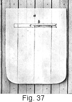 Fig. 36,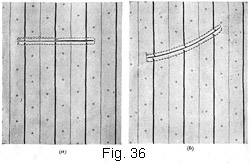 that at (a) being a pocket made on the straight of the material and that at (b) being a curved pocket. The principle of making these wash welt pockets is practically the same in both instances, but to insure a neater finish at the top for the curved pocket a little more care must be exercised in the shaping and placing of the pieces that go to form the pocket.
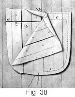41. To make a wash welt pocket, cut two pieces of material about 5/8 in. larger on all sides than the pocket itself is to be. Place the right side of one of these pieces to the right side of the garment, as at a, Fig. 37, and stitch, as at b, across from one end of the pocket to the other. Slash in the center of the stitching, as at c, and then turn the piece to the wrong side of the material, bringing the material up and forming a welt on the right side, as in the welt pocket; then fold it in shape on the wrong side, at the ends, as at a, Fig. 38, and stitch the lower edge of the opening, as at b. With this done, place the other pocket piece directly over the first one, and, turning the pocket right side up, stitch across the top and the ends so that it will appear on the wrong side as at c, placing the row of stitching the same distance from the welt as the lower stitching is. Then turn in the edges, as at d, and stitch all around them, as at e. Finish the pocket by tying all the thread ends and pressing it neatly.
42. The wash welt pocket here shown is of striped material. If the stripe of the material used for such a pocket is very prominent, then the pocket portions, or pouch pieces, should be made of material that is white or of a plain color that harmonizes with the color of the garment, for, as will be observed, the stripes will run irregularly and will not appear so attractive as would plain material in the pocket opening; also, they might show through from the right side.
PATCH POCKETS
43. A patch pocket is merely a piece of properly shaped material stitched to the outside of a garment in a manner not unlike that of a plain-apron pocket. To take away the severe plainness of a pocket in the form of a simple patch, it is common to resort to trimming and plaits; nevertheless, a pocket applied in the manner stated, whether trimmed, plaited, or plain, does not lose its identity. In making patch pockets, the chief essential is neatness. Especially is it necessary to turn the corners evenly and to use care in placing the pocket in position in order not to have it appear drawn or too full over the material. After having made the pockets thus far discussed, little difficulty will be experienced in making the patch pocket, as it is probably the most simple.
44. Plain Patch Pocket.—The first pocket to be considered is the plain patch pocket, which, owing to its simplicity, is not illustrated. To make such a pocket, first cut out the material, shaping it to suit the style of the garment. As a finish, place a 1 1/4- or 1 ¾-in. hem across the top; then turn the outer edges to the wrong side, baste it to the garment, and stitch it in place. With the stitching done and the thread ends secured neatly on the wrong side, remove the bastings and thoroughly press the pocket from the wrong side.
 45. Patch Pocket With a Strap and Flap.—In Fig. 39 is shown a patch pocket with trimming in the form of a strap and a flap. This style of patch pocket is neat, attractive, and suitable for many styles of tailored coats and skirts, especially unlined coats, sport coats, and little boys' coats to which it is desired to give a mannish effect. It is cut a trifle narrower at the top than at the bottom, so that it will balance well with the garment and impart a trim appearance. This difference in width at the top and the bottom of the pocket, however, must be so slight as to be scarcely noticeable—just enough to give a neater line than if the top and the bottom were the same in width. A piece of material 4 ½ to 5 ½ in. square is required for this pocket, the size for a garment, of course, depending on the kind, style, and position of the pocket itself. To insure accuracy, however, it is advisable to prepare a paper pattern that is exactly the shape and size of the pocket desired. To prepare the pattern, use in this case a piece of paper that is 4 ½ to 5 ½ in. square or a little larger than the desired pocket. Trim off the sides a little at the top, so as to make it narrower at that place than at the bottom; then round off the corners at the lower edge with graceful curves, as the pocket in Fig. 39 shows. In some instances the corners of such pockets are left square, but they are a little more difficult to keep true than are the round corners; also, it is harder to get one side of a pocket with square corners to correspond with the other, especially when stitching is added. When the pattern is made and in position on the material, the pocket may be cut out and mark-stitched and basted on the pattern lines so as to keep the edges even.
45. Patch Pocket With a Strap and Flap.—In Fig. 39 is shown a patch pocket with trimming in the form of a strap and a flap. This style of patch pocket is neat, attractive, and suitable for many styles of tailored coats and skirts, especially unlined coats, sport coats, and little boys' coats to which it is desired to give a mannish effect. It is cut a trifle narrower at the top than at the bottom, so that it will balance well with the garment and impart a trim appearance. This difference in width at the top and the bottom of the pocket, however, must be so slight as to be scarcely noticeable—just enough to give a neater line than if the top and the bottom were the same in width. A piece of material 4 ½ to 5 ½ in. square is required for this pocket, the size for a garment, of course, depending on the kind, style, and position of the pocket itself. To insure accuracy, however, it is advisable to prepare a paper pattern that is exactly the shape and size of the pocket desired. To prepare the pattern, use in this case a piece of paper that is 4 ½ to 5 ½ in. square or a little larger than the desired pocket. Trim off the sides a little at the top, so as to make it narrower at that place than at the bottom; then round off the corners at the lower edge with graceful curves, as the pocket in Fig. 39 shows. In some instances the corners of such pockets are left square, but they are a little more difficult to keep true than are the round corners; also, it is harder to get one side of a pocket with square corners to correspond with the other, especially when stitching is added. When the pattern is made and in position on the material, the pocket may be cut out and mark-stitched and basted on the pattern lines so as to keep the edges even.
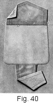46. When the pocket material is cut out, cut the strap for the center trimming, shaping it as shown in Fig. 40, which illustration, in addition to showing the details of the work, shows the pocket with strap and flap attached, secured to the garment material with the final stitching. Make the lower, or wider, end of the flap about one-half as wide as the bottom of the pocket and its top about one-third as wide as the top of the pocket; also, make it a generous inch longer than the pocket itself. After the strap material is cut out, line it with light-weight silk of a harmonizing color; or if the garment on which the pocket is to appear is trimmed in another color or with plaid, line the strap with it.
To make the strap, place the right sides of the material and the lining together and stitch along each side, using a 1/4-in. seam and stitching outside the pattern line of the strap, so that when it is turned it will not appear narrower than the width originally intended. Stitch the sides only, leaving the ends open so that the strap can be turned right side out. When the stitched strap is turned, press it carefully from the wrong side. In lining the strap, make sure that the lining is a trifle narrower than the strap material; that is, do not allow the edge of the lining to extend beyond the material. When the strap is finished and the stitching is added to the right side, it should appear as at a, Fig. 40.
47. With the strap thus prepared, proceed to make the overlap, as at b, Fig. 40. Cut the material for the overlap one-half as long as the pocket and the same in width. Line it with the same material as the strap is lined, and finish it in much the same manner as the flap of a flap pocket is finished. Stitch carefully all around the edges, making a narrow seam; then turn the flap right side out and stitch it, as at c. One or two rows of stitching may be used, depending on the stitching of the garment, with which it should correspond.
With this done, place the right side of the flap to the wrong side of the pocket, and stitch a generous 1/4 in. from the edge, as at d. Then turn the seam of the flap down on the pocket and stitch, as at e. Next, overcast the edge, as at f, and be very careful that the ends g and h do not extend beyond the pocket portion.
48. With the work thus advanced, pin the strap to the lower side of the pocket, so that it can be stitched in position in the manner shown in Fig. 40. Then baste the pocket in position on the garment and stitch all around its outer edges, using stitching that comes close to the edge or corresponds with the stitching on the garment. If the stitching comes very close to the edge, be extremely careful not to let it run off the edge. Particular pains must be taken when stitching very close to the edge of a thick surface, because the presser foot of the sewing machine in such cases has a tendency to drop off, especially in turning corners. If the stitching is added directly on the edge, turn the pocket wrong side out and trim away the material of the seam up close to the stitching, being careful, of course, to hold the seam away in trimming, so as not to clip the material. When the pocket is stitched in position, remove the bastings and press it carefully.
Next, lift up the strap and secure it underneath the flap, as shown in Fig. 39. This may be done with slip-stitches, so that the thread will not show on either the right or the wrong side of the pocket. If a button is used, as in Fig. 39, rather than take stitches from the underneath side, slip the fingers underneath the strap and the flap and sew the button on, bringing the thread through the strap and the flap and thus holding these two parts together with the button. In finishing off patch pockets, turn the garment so that it is wrong side up and take a few catch-stitches across the ends of the pocket. These stitches will keep it from pulling loose or tearing at the upper edge, as they serve to strengthen both the pocket edge and the garment. If such a pocket is to be used a great deal, as, for instance, in children's school or play coats, it is advisable to put a stay strip at the back of the pocket, because such a strip prevents the pocket from tearing out. This strip should be of the same material as that used for binding the seams of the garment. It should be cut lengthwise and carefully slip-stitched-to the material from the wrong side, so that the stitches will not be visible from the right side.
49. Box-Plaited Patch Pocket.— The box-plaited patch pocket, which is shown in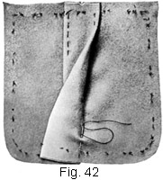 Fig. 41,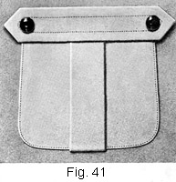 is similar to the patch pocket just described. The material for it is cut in much the same manner, except that 2 ½ in. is allowed in the center for the plait. The plait is brought together and basted, and then the edges are opened out smooth and basted carefully, as shown in Fig. 42. If the material is very firm, it is not necessary to stitch the plait before pressing it flat. It is customary to leave the plait open, so as to give more freedom in the pocket. However, if the material is wiry or not firm in weave, the best plan is to stitch the plait and then press it so that it will be true and even and will hold in shape well. Then turn the outer edge of the pocket and baste, as at a, Fig. 43. At the top of this pocket there is used as a finish a strap cut crosswise of the material. Before placing this strap, bind the upper edge of the pocket, as at b; then proceed with the strap, which should be from 1 1/4 to 1 ¾ in. wide and extend just beyond the edges, as shown at a,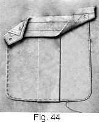 Fig. 44. 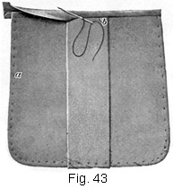Line the strap with silk of a color to match the pocket, and stitch the strap in the manner shown in the illustration or in a way that harmonizes with the other stitchings. With the strap made, fell the upper edge of the pocket to the strap, as at b. Next, pin the pocket in position on the garment. Lift the strap, as at c, and stitch the pocket all the way around on its outer edge, stitching to the box plait on each side, but as a rule not across it. In this case, the plait is left so that it may be securely slip-stitched from the wrong side. Then stay the ends of the pocket from the wrong side, using either a stay strip or slip-stitches. Press the strap and the pocket so that they will set well on the garment. If desired, a button may be added to each end of the strap so as to make the pocket more attractive; or, if corded loops are used in trimming the garment, a little cord may be made to lap down and be secured in place with a button.
50. Patch-Pocket Variations.—In Fig. 45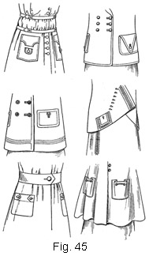 are illustrated several additional styles of patch pockets. Such pockets, as will be noticed, may be made in different shapes, as well as with different styles of straps, flaps, and other trimming. However, as is true of the other pockets, patch pockets must always harmonize with the garment on which they are used, as a close study of the illustration will indicate.
BOUND POCKET
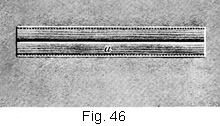51. In Fig. 46 is shown the type of pocket known as the bound pocket. This kind of tailored pocket, which is not unlike a regular slit, or welt, pocket, derives its name from the fact that the edges of the opening are bound, usually with braid. When garments trimmed with braid are in vogue, this style of tailored pocket is in great demand, but, of course, it would rarely, if ever, be used on garments that are not so trimmed. For binding the pocket edges, braid that is ¾ in. wide is usually satisfactory, although for broadcloth suits or suits of fine, firm material, narrower braid of fine weave is sometimes employed. Hercules braid is possibly the most desirable of all braids for tailored work, because it is wieldy; that is, it may be stretched or shrunk to fit shaped edges and curves and yet is firm enough to give a satisfactory finish.
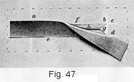52. In making a bound pocket, it is necessary first, as in making other pockets, to determine its position and the width that the pocket opening is to be. With these points known, indicate the width of the pocket opening on the material, as shown by the chalk marks a and b, Fig. 47, and then locate points between the chalk marks, as at c and d, placing them so that the distance between them is 1/8 in. less than the width of the braid, or equal to the width that the bound portions are to be, usually ½ to ¾ in., as the braid on each bound edge shows from 1/4 to 3/8 in. With these points marked, stay the wrong side of the pocket with a stay strip, as for the welt pocket. Next, cut two pieces of braid each 2 in. longer than the pocket, and apply them to the pocket with a small running-stitch, as shown at e and f, taking care to keep the outside edges of the braid exactly on the chalk line. When the braid is thus secured to the material, form the pocket opening by slashing the material exactly in the center of the space between the strips of braid and clipping to the corners in diagonal lines, as in the welt pocket, and as shown at g. In clipping these diagonal lines, be extremely careful not to clip the braid.
With the opening cut, slip the braid of the upper edge through the opening to the wrong side and baste it, as at h. Next, cut two pieces of lining for the pouch portion of the pocket, making these pieces as wide as the braid is long and as deep as the pocket is to be and shaping them at top to conform to outline of pocket opening. In this case, as the opening is straight, no difficulty will be encountered, but when it is crescent-shaped or shaped as in Fig. 25, as is sometimes the case, much care has to be taken in shaping the upper edge of the pouch portion to get it exact. With the upper edge and the sides of these pieces shaped, shape the lower edge as in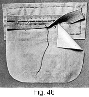 Fig. 48. Next, turn the garment wrong side up and place one of these pouch portions so that its upper edge is directly over the lining stitches, as at a, and baste it in position. Then bring the free edge of the braid of the lower portion over to the wrong side and secure it in position with basting. Next, turn the garment right side up and baste the two folded edges of the braid, or welts, together, as in making the welt pocket, exercising care to keep the fold even and in line with the weave of the braid. With this done, turn under the triangular piece at each end of the opening and fasten it neatly and securely on the' wrong side. Next, stitch along the lower edge of the braid, as at a, Fig. 46, so that the stitching on the wrong side will appear as at b, Fig. 48. This stitching serves to hold the pocket pouch in place. If the braid is very wide and extends far below the stitching line b, whip the edge down so as to hold it well in place. Next, stitch a piece of the garment material to the upper edge of the remaining pouch portion, as in making the welt pocket. Then place the side that has the material attached directly over the opening, baste the upper edge to the braid, and then over the right side stitch the upper edge in the same way as the lower edge was stitched. Next, turn the wrong side up and stitch the sides and the lower end of the pocket portions together, and pull all threads through to the wrong side and fasten them in place. Finally, stay the ends of the pocket on the wrong side. The ends on the right side may be left plain, as the illustration shows, or finished with arrowheads.